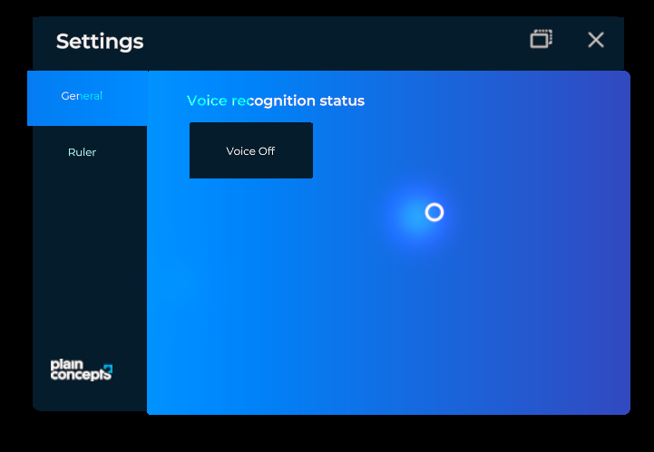

Settings System
XRV provides a default window where you can include specific settings for your application or modules. It also includes a section for general settings provided by the core library, like turning on or off voice commands. To open Configuration window, just press  button that you can find in hand menu.
button that you can find in hand menu.

This window is a TabbedWindow and you have two ways of adding new elements.
- Adding a configuration section to your custom module
public class MyModule : Module
{
public override TabItem Settings { get; protected set; }
public override void Initialize(Scene scene)
{
this.Settings = new TabItem()
{
Name = () => "Module Name",
Contents = this.CreateContents() // Entity with configuration item contents.
};
}
}
- Using SettingsSystem API
var settings = this.xrvService.SettingsSystem;
var item = new TabItem
{
Order = 1,
Name = "My item",
Contents = () => this.CreateContents(),
};
settings.AddTabItem(item);
You can also remove an existing item using RemoveTabItem method.